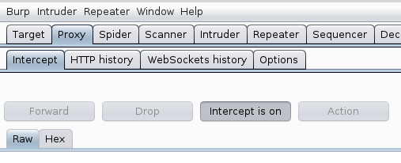
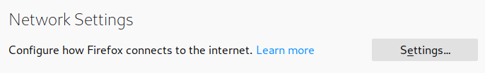
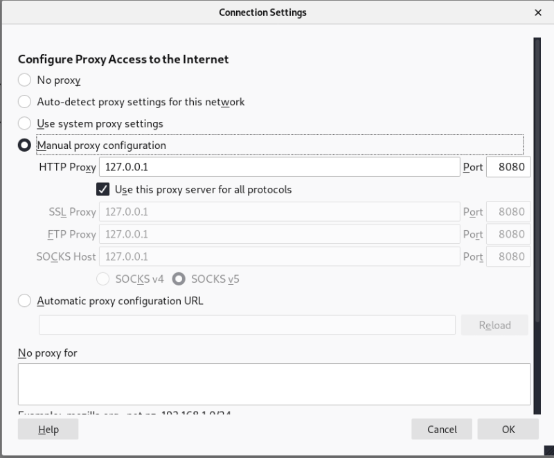
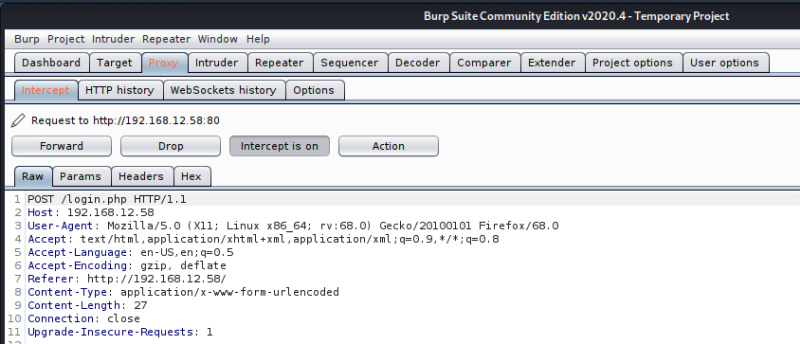

3.1.1 Configure BurpSuite
a) Setting Burp Suite as a Web Proxy.
Burp is designed to be used alongside your browser. Burp functions as an HTTP proxy server, and all your HTTP/S traffic from your browser passes through Burp. To ensure that Burp’s proxy listener is working, go to the Proxy tab and make sure that you see Intercept is on, as shown below.

b) Configure your Browser.
Change your browser’s proxy settings to use the proxy host address (127.0.0.1) and port 8080 for both HTTP and HTTPS protocols. Firefox is the default browser in Kali so open Firefox and go to Preferences. Go to General>Network Settings and click on Settings, as shown below.

c) Select the Manual proxy configuration radio button. Enter 127.0.0.1 in the HTTP Proxy field and enter 8080 in the Port field. Make sure the Use this proxy server for all protocols box is checked. Delete anything that’s in the No proxy for field. Save the settings.

Now, if everything is configured properly, all your HTTP/S traffic should go through Burp. Whenever you visit a website, Proxy tab in Burp will change its color to orange and Burp will hold on to the request until you decide what to do with it. At this point, you can turn off the intercept and only turn it on when you need it.

 Index
Index